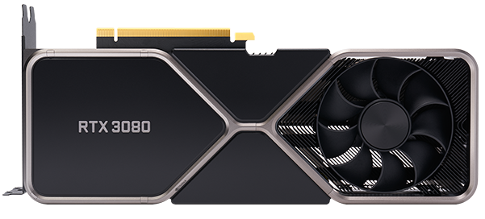
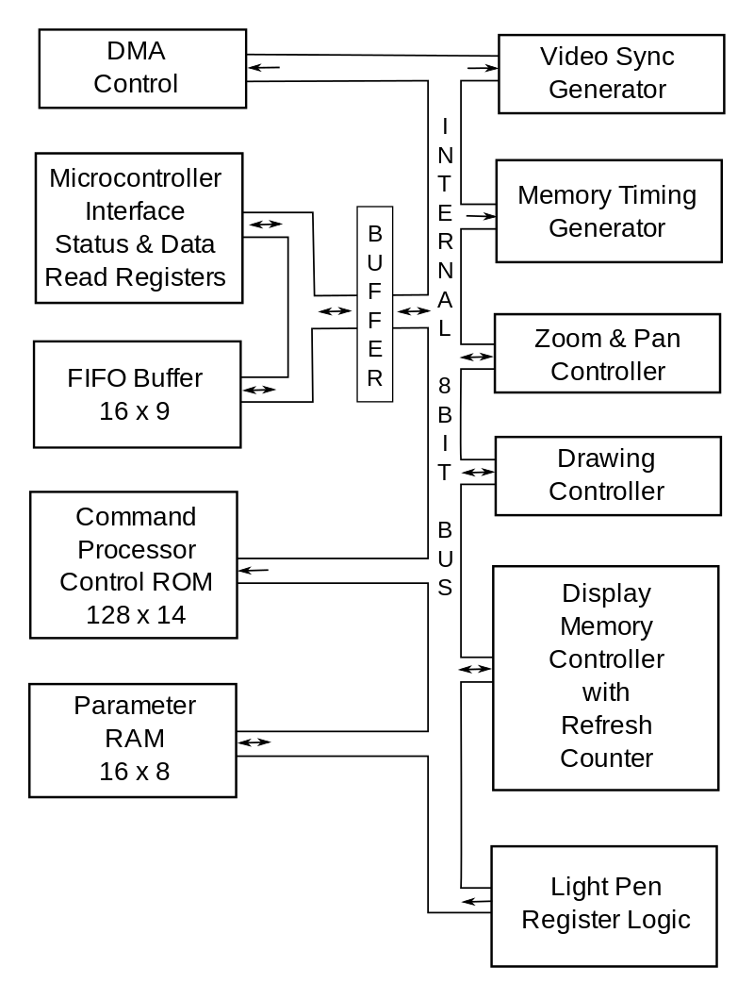
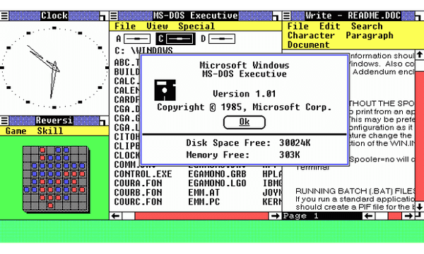
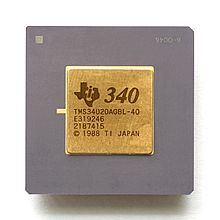
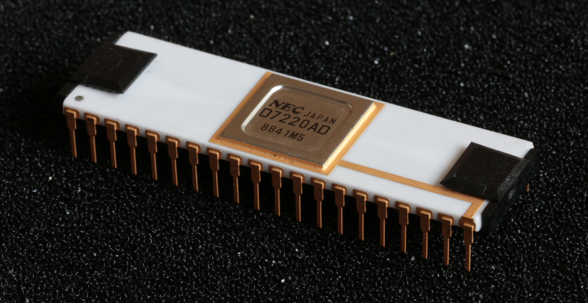
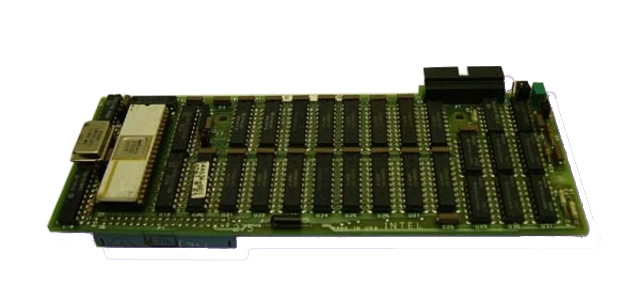
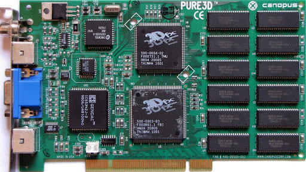

Mais informação sobre a época prévia à invenção das Placas Gráficas.
Inicialmente, as Placas Gráficas possuiam apenas um único core em que se exercia uma funcão fixa utilizada apenas para gerar gráficos. Como qualquer outro tipo de componente tecnológico, as placas gráficas têm-se tornado cada vez mais potentes e otimizadas de forma a acompanhar a evolução dos restantes componentes de um computador.
Nos dias de hoje, as GPU'S operam com um elevado conjunto de cores realizando cálculos bastante complexos desde pesquisa de dados a inteligência artificial. Atualmente, a Placa Gráfica é um dos componentes mais importantes de hardware, mas até 1999, com a criação da primeira Placa de Vídeo especializada, (a GeForce 256 da empresa Nvidia) não havia nenhum componente especializado de processamento de imagens semelhante aos que nós conhecemos atualmente. Sendo esta função tão essencial numa máquina, como era executado este cargo antes deste game changer?
Na década de 1970, foram inventados os video shifters e video address generators com a função de transportar a informação proveniente do processador, ou CPU, até à tela.
Portanto, antes desta
tecnologia, as imagens eram processadas através do
CPU o que provava ser um processo bastante lento e ineficiente.
Os video shifters, utilizados maioritariamente em consolas de videojogos,
apenas podem ser utilizados em jogos pré-selecionados estando programados
para gerar somente as imagens pertencentes ao videojogo. Logo, não são considerados placas
gráficas tradicionais.
Eram capazes de exibir imagem em 2D na resolução de 62 x 128 em preto
e branco (Para referência, o FULLHD, ou 1080p, tem a resolução de 1920 x
1080 e os monitores atuais são capazes de exibir milhões de cores).
À medida que os sistemas operativos com interfaces mais gráficas ganhavam popularidade, era exigida uma maior demanda por um melhor desempenho gráfico.
Na década de 1980, houve vários avanços na tecnologia de gráficos para videojogos como computadores. Foi inventado o primeiro processador de vídeo integrado para computadores, o NEC µPD7220 , que era capaz de desenhar linhas e círculos, e o primeiro processador de vídeo programável TMS34010.
Mais do que nunca havia uma grande demanda por hardware capaz de produzir gráficos, portanto cada vez mais empresas começaram a investir neste ramo. Em 1981, a International Business Machines Corporation (IBM) começou a incorporar adaptadores gráficos monocromáticos e de cores nos seus processadores de vídeo de forma a chegarem a uma melhor clareza de imagem e vídeo.
Pouco depois, a empresa
Intel
lançou o ISBX 275 Video Graphics Controller
Multimodule Board, capaz de apresentar 8 cores numa resolução de
vídeo de 256x256 e monocromático a 512x512.
Entretanto, quatro emigrantes de Hong Kong, Lee
Ka Lau, Francis Lau,
Benny Lau, e Kwok Yuen Ho fundaram a ATI Technologies, que posteriormente
criaram Placas de Vídeo revolucionárias que lideraram o mercado durante anos.
O seguinte mapa mostra onde a sede desta empresa (atualmente a AMD) está situada.
Pela década de 1990, a demanda exigia gráficos 3D em tempo real, focandose maioritariamente em videojogos. Quem liderava a inovação pela maioria da década era a empresa 3dfx3 , cujo primeiro produto, o Voodoo 1, suportava gráficos 3D e rapidamente alcançou 85% do mercado. Voodoo 1, como o Voodoo Graphics seria conhecido, se distingüia pela sua falta de um controlador de vídeo, necessitando uma placa VGA dedicada e um slot PCI a mais. A placa Voodoo só entrava em ação quando o computador em que estava instalada executava um aplicativo programado para usar a placa.
Voodoo 1
A Voodoo 1 não era considerada uma Placa de Vídeo tradicional pelo facto de apenas conseguir gerar gráficos 3D. Então, para aplicações normais 2D, era necessário o uso de um controlador para software 2D, uma placa VGA e um slot PCI a mais. Era também necessário o uso de uma aplicação instalada no computador para que a Voodoo 1 entrasse em ação.
Chegando ao fim do milénio, a Nvidia entrou no negócio das Placas de Vídeo lançando duas Placas Gráficas revolucionárias, a Riva TNT 2, que suportava cor a 32 bits, e a GeForce 256, sendo esta considerada a primeira unidade de processador gráfico do mundo. Rapidamente se percebeu que estas GPU'S eram a próxima geração no que toca a processadores de vídeo.
A performance obtida em videojogos e aplicações 3D, a qualidade de imagem e o preço eram suficientes para acabarem com a competição e logo se tornou no melhor produto nos olhos dos consumidores. Depois do seu lançamento, a qualidade gráfica dos videojogos aumentou exponencialmente.
Voltar ao Início